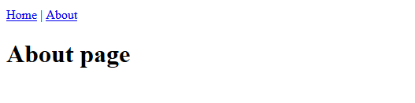

This is the fourth part of a multi-part series on building a web app with Python and Django. The web app will act as a resource for Engineering students at Oregon Community Colleges that want to transfer to 4-year Universities. It will show which classes from their community college engineering program will transfer for which classes in a 4-year University engineering program. In this four post, we'll create our first two website pages: the home page and about page.
- Create a Pages App
- Add our new pages app to settings.py
- Project URL's
- Page app urls
- Create a view for the home and about pages
- Create the templates for the home and about pages
- Write and run tests for the home page and about page
- Install isort and black
- Add, commit and push to GitHub
- Summary
- Future Work
Create a Pages App
In order to create our home page and about page, we need to create a new Django App. Django Apps are small pieces of functionality within our Django project. For example, we are eventually going to have a separate app for users and courses. Our first app is going to be the pages app.
Key in the commands below to create a new Django app called pages. Make sure you are in the (transfer) virtual environment and inside the transfer/ directory when the commands are run.
> cd Documents
> cd transfer
> conda activate transfer
(transfer) > python manage.py startapp pages
This comand creates the pages app and introduces a couple new files into our project. The project file structure should look something like below:
transfer/
│ .gitignore
│ db.sqlite3
│ LICENSE
│ manage.py
│ README.md
│ requirements.txt
│ runtime.txt
│
├───pages
│ │ admin.py
│ │ apps.py
│ │ models.py
│ │ tests.py
│ │ views.py
│ │ __init__.py
│ │
│ └───migrations
│ __init__.py
│
└───transfer_project
Add db.sqlite3 to .gitignore
Notice how the startapp pages command created a new file called db.sqlite3. This file holds our database. From my experience, it's best to add this file to .gitignore so that the db.sqlite3 database isn't synched with github.com. I've just found this makes project development easier.
Open the .gitignore file and add db.sqlite3 to the bottom of the file and save it.
# .gitignore
...
db.sqlite3
Add our new pages app to settings.py
We created a new Django app called pages. Since we created a new app, we need to include it in the list of installed apps in transfer_project/settings.py. Open the settings.py file in the transfer_project/ directory and add the line "pages.apps.PagesConfig", to the list of INSTALLED_APPS.
# transfer_project/settings.py
...
INSTALLED_APPS = [
"django.contrib.admin",
"django.contrib.auth",
"django.contrib.contenttypes",
"django.contrib.sessions",
"django.contrib.messages",
"django.contrib.staticfiles",
# project specific
"pages.apps.PagesConfig",
]
Now let's built thoese two web pages.
Project URL's
We need to make sure that both the overall project urls and the page app urls are set up for our new pages (the home page and about page).
First, we need to make sure that the overall project url's are pointing to our pages app url's. Open the file urls.py in the main transfer/ project directory and make the changes below.
# transfer_project/urls.py
from django.contrib import admin
from django.urls import path, include
urlpatterns = [
path('admin/', admin.site.urls),
path('', include('pages.urls')),
]
Page app urls
Now we need to modify the page app urls. This means we need to create a file pages/urls.py. Take a look at the imports at the top of the file. We import the HomePageView and AboutPageView from the views.py file in the same directory (from .views). And see how the AboutPageView.as_view() and HomePageView.as_view() methods are included in the path functions.
# pages/urls.py
from django.urls import path
from .views import HomePageView, AboutPageView
urlpatterns = [
path('about/', AboutPageView.as_view(), name='about'),
path('', HomePageView.as_view(), name='home'),
]
Create a view for the home and about pages
Now within the pages app, we need to modify the pages/views.py file. We'll build a class-based view for the home page and about pages. Take a look at the imports at the top of the file. The class names for the views have to match the class names for the views which we included in the pages/urls.py file.
# pages/views.py
from django.views.generic import TemplateView
class HomePageView(TemplateView):
template_name = 'home.html'
class AboutPageView(TemplateView):
template_name = 'about.html'
Create the templates for the home and about pages
Now we'll build three templates which combined will render the home page and the about page. One template will be a base template. The home and about page templates will build upon this base template. Before we use the templates, a templates directory has to be created in the base project directory. All three templates will be saved in this templates/ directory.
Add template path to project settings.py
After the templates directory is created (in the project root directory), the transfer_project/setting.py file needs to be modified to include the new templates directory. In the TEMPLATES block of the transfer_project/setting.py file, add Path(BASE_DIR, "templates") to 'DIRS'. Make sure that Path is imported from the pathlib module (part of the Python Standard Library) at the top of the settings.py file.
# transfer_project/settings.py
from pathlib import Path
import os
...
TEMPLATES = [
{
"BACKEND": "django.template.backends.django.DjangoTemplates",
"DIRS": [Path(BASE_DIR, "templates")],
"APP_DIRS": True,
"OPTIONS": {
"context_processors": [
"django.template.context_processors.debug",
"django.template.context_processors.request",
"django.contrib.auth.context_processors.auth",
"django.contrib.messages.context_processors.messages",
]
},
}
]
Base template
Now we'll build the base template. This template acts as the parent template for the home and about templates. Create a base.html file in the templates/ directory.
<!-- templates/base.html -->
{% block doctype %}
<!DOCTYPE html>
<html lang="en">
{% endblock %}
{% block head %}
<head>
<meta charset="UTF-8">
{% block title %}
<title>Oregon Transfer App</title>
{% endblock %}
</head>
{% endblock %}
{% block header %}
<header>
<a href="{% url 'home' %}">Home</a> | <a href="{% url 'about' %}">About</a>
</header>
{% endblock %}
{% block content %}
{% endblock %}
Home template
The home template is next. Create a home.html template in the templates/ directory. The home template extends the base template.
<!-- templates/home.html -->
{% extends 'base.html' %}
{% block title %}
<title>Home</title>
{% endblock %}
{% block content %}
<h1>Home page</h1>
{% endblock content %}
About template
The about template is next. Create an about.html template in the templates/ directory. The about template also extends the base template.
<!-- templates/about.html -->
{% extends 'base.html' %}
{% block title %}
<title>About</title>
{% endblock %}
{% block content %}
<h1>About page</h1>
{% endblock %}
Run the local server
Now let's test the site. Run the local server and see our changes. I ran the server from the Anaconda Prompt.
> conda activate transfer
(transfer)> python manage.py runserver
The resulting home and about pages should look something like this:


Write and run tests for the home page and about page
It's good practice to write tests for our Django project. Django has a built-in test framework that allows us to test the home page and test the about page. In the pages app, we'll modify the tests.py file to include these tests. Once the tests are written, the tests can be run from the Anaconda Prompt.
Write tests
Write the tests in the pages/tests.py file:
# pages/tests.py
from django.test import SimpleTestCase
class PagesTests(SimpleTestCase):
def test_home_page_status_code(self):
response = self.client.get('/')
self.assertEqual(response.status_code, 200)
def test_about_page_status_code(self):
response = self.client.get('/about/')
self.assertEqual(response.status_code, 200)
Run tests
Run the tests with the manage.py test command. If the local server is still running key in [Ctrl-c] to stop the server.
(transfer)> python manage.py test
The output I got after running the tests looked something like:
System check identified no issues (0 silenced).
..........
----------------------------------------------------------------------
Ran 10 tests in 0.026s
OK
Great! All the tests passed!
Install isort and black
Before we finish up this section of the project, we are going to install two Python packages that are useful for code formatting: isort and black. isort is a Python package that will automatically sort the imports at the top of .py files. black is a code formatter that will automatically format the code in our .py files. I like using these two packages to keep my code consistant. Install the packages with the commands below using the Anaconda Prompt
(transfer) > python -m pip install isort black
Run isort and black
Now that isort and black are installed, we can run these two tools from the command line and format our code automatically. Key in the commands below into the Anaconda Prompt to format our .py files in a consistant way.
(transfer) > isort .
(transfer) > black .
Add isort and black to requirements.txt
Since we installed two packages into our virtual environment, we will add these packages to our requirements.txt file. Type to the command below into the Anaconda Prompt to update requirements.txt with our two new package installs.
(transfer) > python -m pip freeze > requirements.txt
We're done with our work for this part of the project. All that's left is to make sure the code on github.com is in synch with the code on our computer
Add, commit and push to GitHub
We've made a bunch of changes to our project. Let's add, commit and push these changes up to github.com. Type the commands below into the Anaconda Prompt.
> git add .
> git commit -m "commit message"
> git push origin main
Summary
We got a lot of work done on the transfer app built with Django and Python. First we created a new pages URL route and created two new pages using Django's class-based views. Then we built some basic templates in Django's built-in templating language. We ran the development server and saw our new pages in action. At the end of this section, we wrote our first tests, ran some automatic code formatting and pushed our code up to Github.
Future Work
Next, we are going to add some styling to our home and about pages. They look pretty basic now, but after we complate the next step in our project, these webpages will incorporate bootstrap styling and look great!